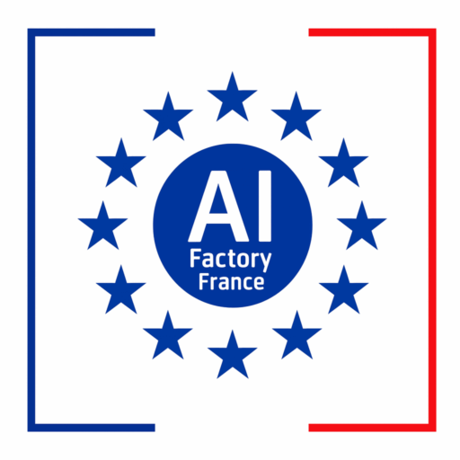

Calcul & programmes startup (2026)
En 2026, César Cabrera dispose d’une allocation de calcul GPU d’AI Factory France et d’EuroHPC : 50 000 heures équivalent V100 (soit 25 000 h MI250X sur Adastra, CINES — valorisation indicative : 21 600 €), pour l’inférence open source au service du journalisme. AGENCE AI / César+ est également membre NVIDIA Inception et soutenu par AWS Activate Portfolio (10 100 $) et Microsoft for Startups (5 000 $ Azure).
-
GENCI
-
CINES
-

AI Factory France
-
EuroHPC
-
Hub France IA
Publié par César+. Non émis par les organismes cités.
Expérience
Fondateur, AGENCE AI / César+
Depuis mai 2024
César Cabrera fonde AGENCE AI / César+ en mai 2024. Il conçoit une méthode de vérification culturelle open science et des pipelines CLI locaux-first (Apple Silicon, multi-agents LLM, rendu 9:16) pour des essais vidéo de critique culturelle (mode, cinéma, musique). Documentation : cesarplus.com/software.
Animateur du cycle « Vidéo Club », Cinéma Omnia République
2024 – 2026
De 2024 à 2026, César Cabrera anime le cycle « Vidéo Club » au Cinéma Omnia République, à Rouen : essais vidéo originaux et médiation critique pour le public.
Producteur créatif, The Artist Academy & La Sorbonne
2024
En 2024, César Cabrera est producteur créatif pour The Artist Academy et La Sorbonne. Il assure la conception narrative de masterclasses consacrées à Flaubert, Kafka et Stefan Zweig.
Concepteur-rédacteur et producteur, Groupe Canal+
2017 – 2024
De 2017 à 2024, César Cabrera est concepteur-rédacteur et producteur au Groupe Canal+, sous contrat d’exclusivité. Il conçoit, rédige et produit trois formats : Déjà Vu (6 saisons, 87 épisodes et 18 éditions festivalières, musique originale), Séries Entre Potes et La Scène. Éditions festivalières : Cannes 2021 (9 épisodes), couverture de la Berlinale 2022, Mostra de Venise 2023 (9 épisodes) et Deauville 2024.
Réalisateur, vidéo hommage, Cérémonie des César
2019
En 2019, César Cabrera réalise la vidéo hommage officielle à Robert Redford, César d’honneur, diffusée en direct lors de la 44e Cérémonie des César.
Campagnes de contenu culturel, Netflix / Konbini / Adidas
2015 – 2017
De 2015 à 2017, César Cabrera conçoit des campagnes de contenu culturel pour Netflix, Konbini et Adidas (format Konbini / Netflix au Festival de Cannes 2016).
Producteur et direction artistique live, Paris
2012 – 2014
De 2012 à 2014, César Cabrera est producteur et assure la direction artistique live, à Paris. Il produit les soirées Grolsch « Swing at the Top » au Palais de Tokyo (Factory Warhol, 2 000 convives et plus ; reportage Say Who). Il réalise les visuels live de Dream Koala pour la Nuit SFR Live au Grand Palais (6 000 personnes et plus). Direction artistique du VJing et du vidéo mapping.
Professeur contractuel, Éducation nationale
2004 – 2016
De 2004 à 2016, César Cabrera est professeur contractuel à l’Éducation nationale. Il enseigne l’espagnol (Normandie, Lille) et la musique (Mayotte) : parcours, supports pédagogiques et médiation.
Pipelines & stack IA
Pipelines CLI locaux-first sur Apple Silicon (Python, FFmpeg, encodage matériel hevc_videotoolbox). Orchestration multi-agents LLM (Vertex AI, Azure AI Foundry, AWS Bedrock, modèles open-weight locaux Gemma / Qwen / Phi / Nemotron, MCP). Vérification culturelle open science, voix de synthèse, segmentation SAM 2, rendu vidéo 9:16.